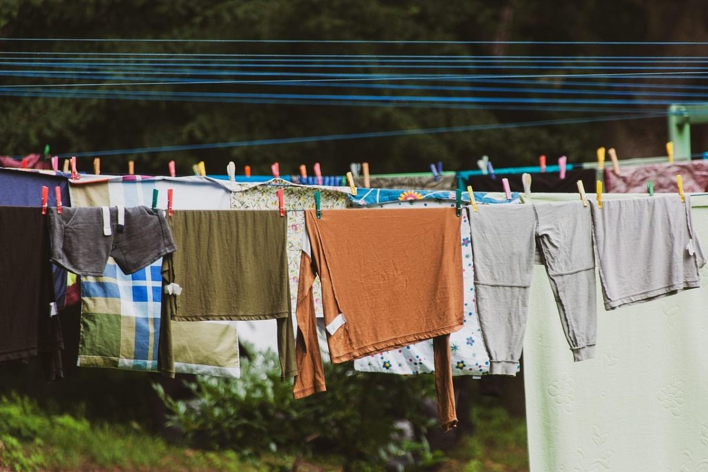
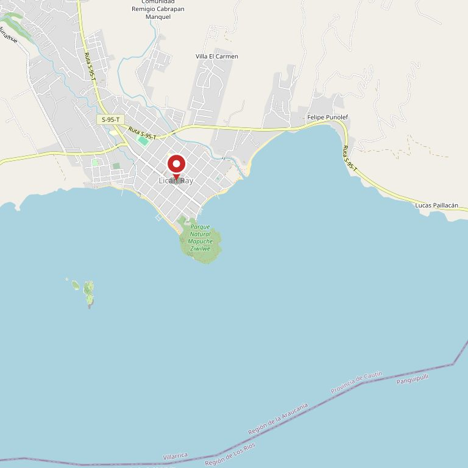

Cabaña 1
falta: para cuántos
- Camas
- falta
- Baños
- falta
- Cocina
- falta: equipada o básica
- Calefacción
- falta: leña o eléctrica
- Terraza
- falta
- Lo que NO tiene
- falta
Esta última línea es la que más confianza da y la que nunca escribe nadie.
Propuesta de sitio web — preparada para Cabañas Carolina por CristalWeb
169 reseñas ganadas atendiendo bien, y una web antigua que hoy compite en contra (verificado el 21-08-2026): el que la abre en el teléfono se va a otra cabaña. Ésta es la página que debería estar ahí.
Cabañas · Licán Ray
Es la desconfianza de fondo de todo el rubro, y la razón por la que alguien reserva en otro lado aunque le guste más la foto. Se cura con una cosa: que cada cabaña tenga su propia ficha.
Llamar ahora Ver la cabaña exacta
Una ficha por cabaña
Cuando todas las cabañas se muestran juntas, el cliente asume lo peor: que le van a dar la más chica. Cuando cada una tiene su ficha —con su número, su capacidad y sus fotos—, el que reserva sabe qué le van a entregar y deja de regatear.
Cabaña 1
falta: para cuántos
Esta última línea es la que más confianza da y la que nunca escribe nadie.
Cabaña 2
falta: para cuántos
Si dos cabañas son idénticas, se dice: «la 2 es igual a la 1». También es un dato.
+
Las demás unidades
falta: confirmar cuántas cabañas son — no las invento. Cada una lleva su ficha igual a las de al lado, y la página crece copiando el bloque.
Por qué una foto por cabaña y no un álbum general. Un álbum bonito genera la duda; seis fotos etiquetadas «Cabaña 3» la eliminan. El cliente no pide la mejor cabaña: pide la que vio. Y si la que vio es la que recibe, no hay reclamo posible.
La sombra ya está.
Falta que se vea antes de reservar.
El problema que ya está pagado
No tener página es un vacío. Tener una antigua es peor: el cliente la abre, la ve vieja, y decide en tres segundos que el lugar también lo es. Con 169 reseñas ganadas atendiendo bien, eso es plata que se pierde en la puerta.
Se abre mal en el teléfono
Ocho de cada diez personas van a mirarla desde el celular, casi siempre acostadas, casi siempre de noche. Si hay que hacer zoom para leer un precio, no se lee.
falta: comprobar cómo se ve hoy
Las fotos tienen años
Y eso es literalmente el argumento contrario al que necesitan: si la foto es vieja, el cliente asume que la cabaña que le van a dar no es la de la foto.
falta: comprobar de cuándo son
Nadie puede actualizarla solo
Es el problema de fondo. Una página que hay que pedirle a alguien que cambie termina quedándose con los precios del año pasado.
falta: confirmar quién la maneja
Antes de la llamada conviene abrir su página en el teléfono y anotar exactamente qué falla. Esta lista está armada; los tres renglones vacíos se llenan mirándola dos minutos.
La otra mitad de la desconfianza
Llegar y descubrir que la leña se paga aparte arruina la llegada, por poco que cueste. No es el monto: es la sorpresa. Escrito antes, nadie reclama.
Ninguna de estas seis respuestas cuesta plata. Las seis juntas son la diferencia entre una reserva que se cierra por WhatsApp en dos mensajes y una que se pierde en el tercero.
Sombra en enero, que es cuando hace falta
Los árboles no se plantan en temporada

La única foto suya que hay en internet
Es la única imagen de Cabañas Carolina que no lleva la marca de agua de un portal de terceros. Dice lo esencial —terreno grande, cabañas separadas, sombra— y con eso ya compite. Cuatro fotos más, sacadas con el teléfono en una tarde, y esta página deja de depender de imágenes prestadas para contar algo que ellos tienen y se ve bien.


La segunda es la foto del terreno, la única suya que hay en internet. Las otras siete son de bancos de uso libre, elegidas por lo que el negocio sí tiene: pasto, árboles grandes, sombra, leña y ropa secándose al sol. Ninguna promete piscina ni quincho, y el lago es el del pueblo, no una vista de las cabañas. Cuando lleguen las fotos del local, este mosaico es lo primero que se reemplaza: cada pieza queda etiquetada con el número de su cabaña. La procedencia de cada archivo está en imagenes/FUENTES.txt.




Cómo se reserva
Ésa es toda la vía de contacto que hay publicada. Funciona —169 reseñas lo dicen— pero obliga a que alguien conteste el teléfono a las once de la noche de un martes de enero, que es cuando la gente decide.
Los seis datos de abajo no son un formulario: son la ficha de contacto que esta página tendría el día que el dueño los confirme. Nada de esto está inventado; lo que no está verificado dice «falta».
En enero se llena.
La página tiene que contestar en diciembre.
Para reservar, hoy hay que llamar
Es el número publicado en su ficha de Google. Esta página existe para que la mitad de esas llamadas dejen de ser preguntas que ya podrían estar contestadas.

Las 169 reseñas de su ficha de Google (21-08-2026), el teléfono +56 9 6845 9934, y que tienen una página web antigua. La nota promedio no se muestra a propósito: acá se habla del volumen.
Cuántas cabañas son. Las dos fichas están puestas para mostrar la forma; la tercera caja dice a propósito que faltan las demás. Poner un número equivocado en internet es peor que no poner ninguno. Tampoco hay precios.
Las unidades con su capacidad, qué incluye cada una, y una foto por cabaña etiquetada con su número. Eso último es lo que contesta la pregunta del titular. Las fotos de esta demo son de bancos libres y no son del recinto.